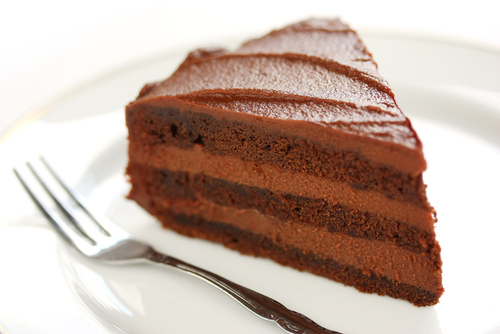
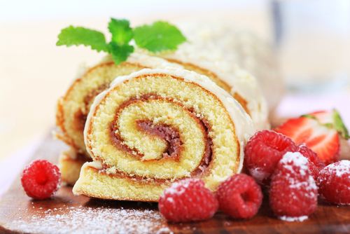

Task 1: Introduction to Biscuits, Cakes and Sponges
Further instructions here to be confirmed.
Further instructions here to be confirmed.
Biscuits, cakes and sponge products are extremely popular for morning and afternoon tea, and as dessert items.
Biscuits are also served as petits fours with coffee, whilst cakes are more traditional lunch desserts or part of an afternoon tea buffet.
Sponges, with their light and airy texture, can be a simple sponge roll or traditional Black Forest gateau.
|  |  |
Elaborate gateaux and torten can act as a ‘drawcard’ for customers attending a more formal afternoon tea menu.
The skills required focus on following processes and weighing ingredients correctly to achieve a high quality end product.
Using pictures of the finished products as part of the recipes will assist with quality assurance.
There are many types of biscuits available for chefs to prepare, cook and present to their customers. Some examples are:
The following are based on a creaming method with the addition of milk and variations of flour ratios:
There are many methods to make a sponge. Three examples are provided below:
Some examples of sponge are provided below:
There are many ingredients used in the preparation and finishing of biscuits, cakes and sponges.
It is the different ratios and preparation methods used that influence the end product.
Quality ingredients lead to a quality product.
Ensure you use the correct ingredients in the right amounts and follow the preparation steps to achieve a consistent quality outcome.
Utilise the correct cookery methods to ensure a quality end product.
It is important to be aware of the basic commodities used in preparing and making biscuits, cakes and sponges. This awareness will enable you to create and judge a perfect product.
The ratio of the basic ingredients used in baking influences the appearance and taste of the finished product. Commodities used include:
Flour is produced in many forms and will provide a different outcome in making biscuits, cakes and sponges. The table provides some examples of the different types of flours available:
| Weak (soft) flour | ~9% protein | Used in sponges or shortbread biscuits in which eggs provide additional structure |
| Medium flour | ~11% protein | Used in yeast goods, for example Danish pastries |
| Strong (hard) flour | >12% protein | Used in bread and puff pastry |
| High protein | ~15% protein | Used in pasta and high protein bread – durum wheat added to flour for this purpose |
In most kitchens baker’s flour is purchased and then the flour can be weakened by the addition of cornflour or wheat starch, or it can be hardened by the addition of semolina, durum wheat or dry gluten. By adding baking powder the flour is changed to self-raising flour.
Fats and oils are used in biscuit pastes as well as in batters and sponges. As the fat prevents the gluten from forming long strands it is also referred to as shortening.
Sugar comes in many different types such as granulated, caster and icing sugars. In biscuits, cakes and sponges sugar is used:
Cream is used for fillings such as crème Chantilly, as a decorative feature on a gateau and also as an accompaniment. There are many types of creams used in making and finishing biscuits, cakes and sponges:
Flavourings, colourings and essences all contribute to the final flavour or presentation of biscuits, cakes and sponges. For example:
|
|
|
Throughout the world there are various biscuits, cakes and sponges to tempt individuals to enjoy a little indulgence. Some of those examples can be seen below.
Macaroons
A delicate, meringue-based biscuit from France, this is made from egg whites, icing and granulated sugar, ground almonds and is coloured with various food colourings. This biscuit can be seen in delicatessens, supermarkets and on menus worldwide.
Biscotti
These originally date back to the 13th century and and are a hard biscuit, due to being cooked twice. They are normally served with sweet wine or coffee. Traditionally they were made with hazelnuts and aniseed but today chefs have created a huge variety of different recipes to tempt their customers. ‘Bis’ means ‘twice’ in English, ‘cotti’ is ‘cooked’ – hence their name.
Cookies
Cookies are another name for biscuits in America and Canada but they are also a type of chewy biscuit found the world over. They are a mix of flour, eggs, sugar, salt, baking powder and flavourings such as vanilla or famously chocolate chips. The dough is wet when made and is placed on an oven tray in a ball. This then spreads into the cookie shape we see in many supermarkets today.
Lebkuchen
These are a traditional biscuit which is normally served at Christmas or at the famous German ‘Oktoberfest. They are similar to a ginger biscuit in the UK but softer in texture. A traditional recipe includes eggs, flour, sugar, honey, treacle, baking powder and various spices to add to the flavour including cinnamon, nutmeg, all spice, lemon and ginger.
Galette des rois
This cake is traditionally served during and after Christmas in France. It is made of puff paste, icing sugar and a rich almond cream, cooked until golden brown. Also known as ‘kings’ cake’.
Revani
This cake is of Turkish/Greek origin and is made from semolina, lemon and an orange syrup which makes the cake a little less dry and more palatable for the customer.
Mawa cake
This Indian cake is made from milk, cardamom and nuts such as almonds. It is an essential part of the cafés especially in Mumbai. The cake is made through the evaporation of the liquids in milk to a solid with the added flavours of the cardamom and nuts.
Dundee cake
This cake is a Scottish fruit cake made from currants, raisins and cherries. Traditionalists may may also include a ‘dram’ of whisky to add to the flavour. It is decorated with concentric circles of flaked almonds.
American sponge
The cake batter is made from plain flour, eggs and caster sugar. The texture of the cake is very soft and, due to the bleached flour used, the sponge itself normally takes on the colour of the other added ingredients, such as fruit or cocoa powder.
Genoise
This is an Italian sponge made from a sabayon of the eggs, cooked over a hot water bath with flour gently folded in. This sponge is used for all sorts of different occasions from wedding cakes to ‘lady fingers’ on a Charlotte russe.
You have now reached the end of this unit and are ready to progress to the quiz. You can do this by clicking on the tabs below. Remember that you can revisit this unit to revise at any time.